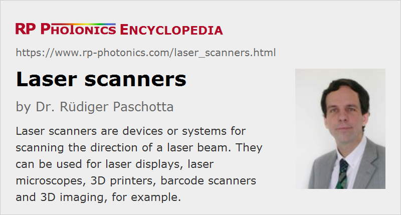

Laser Scanners
Definition: devices for scanning the direction of a laser beam
German: Laser-Scanner
Categories: photonic devices, vision, displays and imaging
How to cite the article; suggest additional literature
Author: Dr. Rüdiger Paschotta
A laser scanner is a device which can be used for controlling the direction of an outgoing laser beam. Typically, it is used for systematic periodic scanning (raster scanning), either in one dimension or in two dimensions. For example, a barcode reader requires scanning only in one dimension (along a straight line), while laser displays with point scanning require scanning in two dimensions – e.g. subsequently scanning straight horizontal lines, some number of which is arranged with some vertical offset. Some other scanners are suitable for freely addressing different beam directions, for example controlled with a computer algorithm.
In some cases, a laser scanner is understood to be an instrument which besides the beam scanning apparatus contains additional hardware for performing certain functions. In particular, there are laser scanner instruments based on LIDAR which can acquire three-dimensional images of the room in which they are placed. Such scanners are widely used in architecture and for crime scene investigations, for example.
Operation Principles of Laser Scanners
There are very different kinds of laser scanners, which are based on different operation principles and explained in the following sections.
Rotating Mirror Scanners
Various kinds of scanners essentially rely on some kind of rotating mirror. For example, one may start with a cylindrical piece, where one end is cut off at some angle against the cylinder axis and equipped with a mirror coating. When that device is rotating around the cylinder axis, driven by some motor, and incident laser beam is periodically sent into different directions.
Polygon Scanners
Many laser scanners are based on a polygon, which is continuously rotated around its axis and has its outer area covered with mirror segments. The incoming laser beam is reflected by those segments, and for each segment the outgoing beam covers a certain angular range.
Polygon scanners may be regarded as a special kind of rotating mirror scanners.
A scanner may contain optical elements such as a scanning lens in addition to those components actually moving the beam, such as the rotating polygon.
Galvanometer Scanners
In a galvanometer scanner, a scanning mirror can be rotated to different positions by electromagnetic forces. Some of these devices are operated periodically, exploiting a mechanical resonance. The angular velocity is then of course not constant during a scan.
Other Mechanical Drives
While most laser scanners are driven by some common kind of electrical motor or a galvanometer, some devices use a different kind of actuator, for example a piezoelectric or magnetostrictive actuator. There are also ways to realize microscanners (very tiny scanners) based on MEMS technology.
Reflective vs. Refractive Scanning
In most cases, one uses some kind of movable mirror, but there are also scanners which employ refractive elements for beam deflection. For example, rotating Risley prisms may be used. Another possibility is to move an optical lens in transverse directions; for example, some fiber launch systems are based on that scanner principle.
Acousto-optic and Electro-Optic Scanners
Some scanners are based on an acousto-optic deflector. These devices do not contain any movable parts, but exploit diffraction at an acoustic wave in a crystal or glass piece, where the deflection angle can be controlled through the radio frequency applied to the transducer. Acousto-optic scanners are very fast, and they are of course not limited to purely periodic scans. However, they mostly exhibit a quite limited range of deflection angles and a limited number of pixels that they can address. A larger deflection range can be obtained with beam-steered deflectors, where the direction of the acoustic wave can also be manipulated in some range.
Another possibility is to use electro-optic devices, which can be extremely fast but can typically not scan over a large range of angles.
Optical Phased Arrays
Another possibility for achieving beam scanning without mechanical parts is to realize an optical phased array. Here, one has an array of mutually coherent emitters, where the phase difference between each pair of emitters is controlled in order to manipulate the direction of the outgoing combined beam. That technology may in the future be used for miniature LIDAR devices as required for self-driving vehicles.
Applications of Laser Scanners
Laser Printers
In a laser printer, one typically has a one-dimensional rotating polygon scanner, with which a beam from a laser diode is sent to variable locations on an image drum. The previously electrically charged drum is discharged at those locations hit by the modulated laser beam, so that the drum later electrostatically attracts toner powder only at the non-illuminated points.
Laser scanners are also used for 3D printers.
Laser Microscopy and OCT
Some kinds of laser microscopes do not capture a whole image in one moment, but rather acquire it sequentially, for example pixel by pixel by scanning a laser beam across the sample. Because with various methods one can largely restrict the contributions to the image signal to a short range around a beam focus in the sample, it is even possible to produce three-dimensional images. For example, confocal scanning microscopes and fluorescence microscopes can work in that manner.
Similarly, optical coherence tomography (OCT) usually involves beam scanning.
Laser Machining
Various kinds of laser material processing utilize some kind of laser scanner for sending the processing beam to different locations on a workpiece, for example. This applies to processes like laser marking and drilling, for example.
In many cases, laser scanners are required which can handle fairly high optical powers. The deflected beams are frequently infrared beams.
Barcode Readers
A barcode reader typically uses a laser scanner, where the outgoing beam is moving in one direction, such that all the bars of the code are crossed, while the intensity of reflected (or backscattered) light is monitored.
3D Object Scanning
With various kinds of LIDAR devices, it is desirable to send the measurement beam into different directions, controlled with a laser scanner. The direction from which returning light is collected is controlled with the same scanner.
Laser Displays and Laser Shows
Most laser displays also rely on scanning – in some cases with one-dimensional scanning only, projecting a whole image line at a time, but more often in two dimensions. The usual image frame rates are low enough for 2D scanning with not too complicated laser scanners, and the image modulation is of course more easily done with that approach. For producing color images, one may for example modulate the intensity (optical power) of a red, green and blue laser beam from an RGB source in order to control the image brightness and color for each point.
Similarly, laser shows utilize laser scanners for sending laser beams in different directions while there optical power is modulated.
Suppliers
The RP Photonics Buyer's Guide contains 21 suppliers for laser scanners. Among them:
Questions and Comments from Users
Here you can submit questions and comments. As far as they get accepted by the author, they will appear above this paragraph together with the author’s answer. The author will decide on acceptance based on certain criteria. Essentially, the issue must be of sufficiently broad interest.
Please do not enter personal data here; we would otherwise delete it soon. (See also our privacy declaration.) If you wish to receive personal feedback or consultancy from the author, please contact him e.g. via e-mail.
By submitting the information, you give your consent to the potential publication of your inputs on our website according to our rules. (If you later retract your consent, we will delete those inputs.) As your inputs are first reviewed by the author, they may be published with some delay.
Bibliography
| [1] | Blog article: “Laser Beam Deflections: The Angle–Diameter Product”, The Photonics Spotlight 2009-02-13 |
See also: acousto-optic deflectors, scanning lenses, telecentric lenses
and other articles in the categories photonic devices, vision, displays and imaging
|  |
If you like this page, please share the link with your friends and colleagues, e.g. via social media:
These sharing buttons are implemented in a privacy-friendly way!